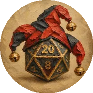

Fun&DiceРуководство для мастера клуба. Здесь описано, что умеют бот и приложение, какие в них кнопки и как они себя ведут. Технических подробностей нет.
Сейчас игроки договариваются об играх с мастером в личных сообщениях. Новая система берёт эту переписку на себя:
Игроки записываются сами. Мастер выставляет игры, видит, кто идёт, отмечает оплату и явку и собирает постоянные группы игроков.
Чего система не делает: - не принимает деньги: оплату мастер отмечает сам, предоплаты нет; - не публикует посты в канал: для поста есть кнопка «Скопировать ссылку на игру».
Сейчас открыта демо-версия приложения. Все экраны в ней настоящие, а игры и люди выдуманы. Кнопки работают «понарошку»: экран показывает, что произошло бы, но ничего не сохраняет. После перезагрузки страницы всё возвращается как было.
Вверху демо есть полоска «Прототип · Игрок». В ней можно: - выбрать, кто смотрит: гость, игрок или мастер. Мастер видит дополнительную вкладку «Мастерская»; - выбрать тему: как в Telegram, светлую или тёмную; - включить пустой календарь, чтобы увидеть, как выглядит экран без игр; - открыть экран первого входа с анкетой; - открыть «Дизайн-систему» — страницу со всеми цветами, шрифтами, кнопками и Фанни.
Бот пока отвечает только на /start. Настоящая запись, напоминания и Мастерская с сохранением заработают на следующем этапе (см. раздел 11).
| Кто | Кто это | Что может |
|---|---|---|
| Гость | Любой человек, который открыл бота, но ещё не заполнил анкету | Смотреть календарь и карточки игр. Видит, сколько мест занято, но не видит имён и адресов |
| Игрок | Заполнил анкету и согласился на обработку данных | Записываться, вставать в очередь, отвечать на приглашения, заказывать игры, видеть, кто идёт |
| Мастер | Человек из списка мастеров (его задаёт разработчик) | Всё, что игрок, плюс «Мастерская»: игры, состав, оплата, явка, группы, игроки, заявки, настройки |
Мастеров может быть несколько, у всех одинаковые полные права. Чтобы добавить мастера, передайте разработчику его Telegram-id. Узнать id можно у бота @userinfobot.
Остальные не видят Мастерскую вообще: для них её как будто нет.
Затем две галочки: - согласие на обработку данных — обязательно. В тексте сказано, что имя увидят другие игроки, и это можно отключить; - «Хочу получать анонсы игр» — по желанию, по умолчанию выключено. 4. После анкеты игрок возвращается к той же игре. 5. Кнопка «Записаться». Можно взять с собой до двух друзей, нужны только их имена. Отмечается галочка «Согласен с правилами клуба». 6. Готово: кубик делает оборот, появляется «Вы записаны ✓». Бот присылает подтверждение, а мастеру приходит уведомление. 7. За сутки бот спрашивает «Будешь?» с кнопками «Буду» / «Не смогу». За 3 часа присылает адрес и кнопку «Открыть в картах». 8. Через 3 часа после игры бот предлагает оставить отзыв в канале отзывов.
Телефон игрок может оставить в профиле по желанию. Его видит только мастер.
Внизу экрана четыре вкладки, у мастера пять.
| Вкладка | Значок | Что там |
|---|---|---|
| Календарь | двадцатигранник | Все ближайшие игры |
| Заказать | свиток | Каталог игр, которые можно заказать своей компанией |
| Мои игры | рюкзак | Мои записи, приглашения, заявки, история |
| Профиль | колпак шута | Анкета, телефон, уведомления, правила, удаление аккаунта |
| Мастерская | молот | Только у мастера |
Вверху переключатель «Месяц / Список». Приложение запоминает выбор.
Месяц. Сетка с понедельника. Сегодняшний день обведён, прошедшие дни бледнее. Листать можно стрелками или свайпом. Под днём с играми стоят значки, до двух штук и «+N», если игр больше:
| Значок | Значит |
|---|---|
| зелёный кубик | мест много (3 и больше) |
| золотой кубик | осталось 1–2 места |
| красный перечёркнутый кубик | мест нет (можно встать в очередь) |
| синий замок | частная игра, тебя туда не звали |
| кубик с точкой | ты записан или тебя пригласили |
| кубик с точкой и часами | ты в очереди, тебе предложили место или запись ждёт подтверждения мастера |
| бледный кубик | запись уже закрыта |
Нажатие на день показывает под календарём карточки игр этого дня.
Список показывает игры на ближайшие 30 дней, сгруппированные по датам.
Фильтры над календарём: «Новичкам», система правил (D&D 5e, D&D 5.5, упрощённые правила), «Есть места».
Если игр нет, Фанни предлагает заказать свою.
Карточка игры в списке показывает: - обложку и номер игры («№12»); - название, день, время и место; - метки: «Новичкам», систему, жанры; - сколько мест занято, например «5/8».
Номер игры нужен для команд бота.
Что на ней есть: - обложка, название, номер, метки; - дата и время с примерным окончанием; - место. Адрес и кнопку «Открыть в картах» видят только записавшиеся, остальные — «адрес после записи»; - цена за место. Записавшийся видит свою сумму, способ оплаты и отметку «Оплачено / Не оплачено»; - «Свободно N из M»; - «Кто идёт». Кружки мест с инициалами и список имён. Друзья показываются как «+1 от Имени». Если игрок скрыл себя в профиле, вместо имени пишется «Игрок». Гость видит только кружки без имён; - описание. Длинное сворачивается, «Читать дальше» его раскрывает.
Главная кнопка внизу меняется по ситуации:
| Кнопка | Когда |
|---|---|
| Заполнить анкету и записаться | у гостя |
| Записаться | места есть |
| Записаться · осталось 2 места | мест мало |
| В лист ожидания | мест нет |
| Вы записаны ✓ | ты уже записан |
| На рассмотрении | у игры включено ручное подтверждение, мастер ещё не ответил |
| Вы 2-й в очереди | ты в листе ожидания |
| Занять место · осталось 1 ч 40 мин | освободилось место и его держат для тебя |
| Буду | тебя пригласили с группой |
| Запись закрыта | срок записи прошёл |
| Частная игра — только по приглашению | игра закрытая |
Вторая кнопка: - «Отменить запись»; - «Выйти из очереди»; - «Не нужно» — отказаться от предложенного места; - «Не смогу» — отказаться от приглашения.
Если до игры меньше суток, при отмене появляется предупреждение «Мастер увидит позднюю отмену».
Мастер вместо записи видит кнопку «Управлять игрой».
Это каталог ваншотов, которые компания может заказать на свою дату. Последняя карточка — «Своя игра в любом жанре».
Заказ проходит за четыре шага: 1. Сюжет — выбрать из каталога или описать свой. 2. Компания — сколько человек и какой у них опыт. 3. Даты и место — до трёх вариантов дат («днём», «вечером» или точное время). Место — «Лофт мастера (700 ₽/чел)» или «Своё место (200 ₽/чел)». 4. Пожелания — пожелания, темы, которых не надо касаться, комментарий и итоговая сумма.
В демо пока виден только каталог: заказ включится на этапе 3.
Три раздела.
Мастерская есть только у мастера. Вверху вкладки: Сводка, Игры, Группы, Игроки, Настройки. На этапе 3 добавятся Заявки и Каталог, позже — Места, Рассылка, Статистика и Экспорт.
Фильтр «Предстоящие / Прошедшие / Черновики». Нажатие на игру открывает управление ею.
Форма из пяти блоков.
| Блок | Поля |
|---|---|
| Основное | название, обложка (на этапе 2 — своя картинка с обрезкой 16:9), описание, система, жанры, «Новичкам» |
| Когда и где | дата, время начала, длительность 4–7 часов, место: лофт, антикафе или свой адрес |
| Места и цена | минимум и максимум мест (по умолчанию 4 и 8), цена места: 700, 200 или своя, «Как оплатить» (это видят только записавшиеся) |
| Запись | за сколько часов до начала закрывается запись (по умолчанию 24), видимость «Публичная / Частная», «Подтверждать запись вручную» (по умолчанию выключено: игроки записываются сами) |
| Играем с группой | выбор группы — подробнее в разделе 6 |
Внизу две кнопки: «Опубликовать» и «Сохранить черновик». Черновик видит только мастер.
Форма не даст: - поставить минимум мест больше максимума; - позвать людей больше, чем мест; - при правке сделать мест меньше, чем уже записано.
Вверху сводка игры: дата, место, «5 из 8 мест» и «собрано 2 400 ₽ из 3 500 ₽».
Кнопки:
- Скопировать ссылку — ссылка вида t.me/<бот>?startapp=game_… для поста в канале. Она открывает приложение сразу на этой игре.
- Редактировать — та же форма.
- Дублировать — копия-черновик на неделю позже, без игроков.
- Перенести — новая дата. Все записавшиеся получат «Игра перенесена» с кнопками «Остаюсь / Не смогу». Отмена после переноса не считается поздней.
- Отменить игру — нужно указать причину. Все получат сообщение, а мастер — список тех, кому вернуть деньги.
Состав. По каждому игроку видно: - имя и @ник (нажатие открывает чат с игроком); - опыт; - откуда запись: сам, группа, заявка, приглашение или мастер; - сколько мест он занял; - ответил ли «Буду» на напоминание (галочка или песочные часы).
Действия со строкой игрока: - Отметка оплаты. Нажмите на бейдж и выберите: «Не оплачено», «Оплачено переводом», «Оплачено на месте», «Частично» (с суммой), «Бесплатно», «Возврат». Сумма «собрано» пересчитается. - Убрать — с подтверждением.
Ещё в составе есть: - «Добавить игрока» — из базы игроков или ручного игрока без Telegram, просто по имени. Для ручного игрока нужно подтвердить, что человек согласен, чтобы его имя внесли. Сообщений он не получает, за него отвечает мастер. - Метка «без Telegram» у ручных игроков.
Явка (у прошедшей игры). Все записавшиеся по умолчанию отмечены как пришедшие. Снимите галочку с тех, кого не было, и нажмите «Готово». Если не нажать, через 48 часов система закроет явку по текущим отметкам.
Список постоянных компаний: название, заметка, участники. Создание группы, состав, «Добавить игрока», «Убрать». Как группы работают в играх — в разделе 6.
Поиск по имени. По каждому игроку видно: - @ник и опыт; - сколько игр сыграл; - отмены, поздние отмены и неявки (на этапе 2); - в каких группах состоит; - заметки мастера — их видит только мастер.
Отсюда же можно написать игроку.
Значения по умолчанию, их можно менять без разработчика:
| Настройка | Сейчас |
|---|---|
| Места минимум / максимум | 4 / 8 |
| Длительность игры | 4 часа |
| Запись закрывается за | 24 часа до начала |
| Поздняя отмена — если меньше чем за | 24 часа |
| Напоминания | за 24 и за 3 часа |
| Тихие часы (без уведомлений) | 23:00–09:00 |
| Цена: лофт / своё место | 700 ₽ / 200 ₽ |
| Сколько держится предложенное место | 2 часа |
| Сколько ждём ответа на приглашение группы | 48 часов |
| Автозакрытие явки | через 48 часов |
Группа — постоянная компания, например «Пятничная партия». С ней не нужно каждый раз добавлять тех же людей вручную.
Запись автоматическая. Есть место — игрок сразу записан. Галочка «Подтверждать запись вручную» нужна для редких игр. Тогда запись висит «На рассмотрении», пока мастер не нажмёт «Принять» или «Отклонить».
Лист ожидания. - Если мест нет, игрок может встать в очередь. Сам он туда не попадёт, только по кнопке. - Когда место освобождается, первый в очереди получает «Освободилось место — оно ждёт тебя» с кнопками «Занять» и «Не нужно». Место держится 2 часа. - Если он молчит или отказывается, место предлагается следующему. - Если человеку нужно 2–3 места, а освободилось одно, его пропускают, но он не теряет своё место в очереди. - Ночью предложение не «сгорает»: срок отсчитывается с момента, когда сообщение реально ушло (утром). Если до игры меньше 12 часов, предложение уходит сразу и живёт хотя бы до 10:00. - Если в очереди никого нет или никому не подходит, мастеру приходит «освободилось N мест».
Поздняя отмена. Отмена меньше чем за 24 часа до игры помечается как «поздняя», и мастер это видит. Поздней не считается отмена: - по кнопке «Не смогу» на напоминание за сутки (честно предупредил); - после переноса игры; - выход из очереди; - отказ от предложенного места; - отмена мастером.
Недобор. За сутки до игры, если записавшихся меньше минимума, мастер получает кнопки «Играем как есть» / «Перенести» / «Отменить игру».
Оплата. Платёжных систем нет. Игрок видит сумму, способ оплаты и отметку. Мастер отмечает оплату в составе игры или командой бота.
Тихие часы 23:00–09:00. Уведомления, которые вызвал кто-то другой (напоминания, предложения мест, переносы), ночью ждут до 09:00. Срочное, например место в игре, которая начнётся через несколько часов, уходит сразу. Ответ на собственное действие человека приходит сразу в любое время.
В момент начала игры неподтверждённые записи, очередь и висящие предложения закрываются сами.
Бот работает только в личных сообщениях. Если его добавить в группу или канал, он сам выйдет.
Кнопки — удобство, команды — запасной путь. Любое действие кнопкой можно сделать командой. Если нажать старую кнопку, например вчерашнюю «Занять», бот не сломается: ответит «Эта кнопка устарела. Вот как сейчас:» и покажет актуальное. /menu и /start в любой момент возвращают главное меню.
Отвечает бот в манере Фанни, коротко и с иронией, а факты (дата, адрес, сумма) пишет чётко отдельной строкой. На обычный текст вне диалога он отвечает «Я понимаю только кнопки и команды» и показывает меню.
| Команда | Что делает |
|---|---|
/start |
Приветствие и кнопка «Играть» |
/menu |
Главное меню и ближайшее событие |
/cancel |
Прервать начатый диалог |
/games |
Пять ближайших игр с номерами |
/game 12 |
Карточка игры №12 |
/join 12 |
Записаться на №12. /join 12 2 — на два места, /join 12 очередь — в лист ожидания |
/leave 12 |
Отменить запись или выйти из очереди |
/offer да / /offer нет |
Ответ на предложенное место |
/invite да / /invite нет |
Ответ на приглашение группы |
/attend 12 да / /attend 12 нет |
«Буду / Не смогу» на напоминание или перенос |
/my |
Мои записи, приглашения, заявки |
/ics 12 |
Файл для календаря телефона |
/order, /orders |
Заказать игру, мои заявки (этап 3) |
/subscribe, /unsubscribe |
Включить или отключить анонсы |
/rules |
Правила и цены |
/contact |
Контакт мастера |
Игрока в командах можно указать @ником, именем или номером строки из /roster.
| Команда | Что делает |
|---|---|
/admin |
Кнопка в Мастерскую и сводка дня |
/today |
Состав ближайшей игры |
/roster 12 |
Состав игры №12 |
/paid 12 @nik наличные |
Отметить оплату (перевод или наличные) |
/approve 12 @nik, /decline 12 @nik |
Принять или отклонить запись при ручном подтверждении |
/attendance 12 |
Чек-лист явки; /attendance 12 готово — закрыть |
/mark 12 @nik пришёл / нет |
Отметка явки одного игрока |
/keep 12 |
«Играем как есть» при недоборе |
/cancelgame 12 причина |
Отменить игру (бот попросит подтвердить) |
/requests, /confirm 7, /reject 7 причина |
Заявки на заказ (этап 3) |
| Когда | Сообщение и кнопки |
|---|---|
| Записался | подтверждение: «Открыть игру», «В календарь», «Отменить» |
| Мастер отклонил запись | сообщение без кнопок |
| Пригласили с группой | «Буду», «Не смогу» |
| Освободилось место | «Занять», «Не нужно» |
| За 24 часа | напоминание: «Буду», «Не смогу» |
| За 3 часа | адрес и «Открыть в картах» |
| Игру перенесли | «Остаюсь», «Не смогу» |
| Игру отменили | причина |
| Через 3 часа после игры | «Оставить отзыв» |
| Анонсы | только тем, кто согласился; в каждом есть «Отключить анонсы» |
| Когда | Кнопки |
|---|---|
| Новая запись или отмена (с пометкой «поздняя») | «Состав игры» |
| Запись ждёт ручного подтверждения | «Принять», «Отклонить» |
| Ответ на приглашение группы, приглашение сгорело | «Состав игры» |
| Освободились места, а очередь пустая | «Состав игры» |
| Недобор за сутки | «Играем как есть», «Перенести», «Отменить игру» |
| В день игры в 09:00 | сводка: состав, кто ответил «Буду», кто не оплатил, «Оплачено» у каждого |
| После игры | «Отметить явку» |
| Новая заявка на заказ (этап 3) | «Подтвердить», «Изменить», «Отклонить», «Написать» |
| Этап | Что входит | Статус |
|---|---|---|
| 0. Фундамент | Сервер, база, проверка входа через Telegram, роли, расписание уведомлений | ✅ готово |
| 1. Дизайн | Цвета, шрифты, Фанни, все экраны в демо | ✅ одобрено |
| 2. Запись | Настоящая запись и отмена, очередь, группы, Мастерская с сохранением, оплата, явка, напоминания, обложки, удаление аккаунта. Готовность — когда реальная игра проведена через систему | ⏳ следующий |
| 3. Заказ игр | Каталог, заказ, заявки, ссылки-приглашения | ⬜ |
| 4. Развитие | Рассылки, статистика, выгрузка в таблицу, сезонные темы (Хэллоуин, Новый год), онлайн-игры | ⬜ |
Эти вопросы не мешают разработке, но до запуска на ответы нужны.
| Статус | Что значит |
|---|---|
| Записан | Место за игроком |
| На рассмотрении | Ждёт решения мастера (только при ручном подтверждении) |
| В очереди | Мест не было, игрок ждёт |
| Место ждёт тебя | Освободилось место, его держат для игрока ограниченное время |
| Приглашение | Мастер позвал с группой, ждём «Буду / Не смогу» |
| Отказался | Ответил «Не смогу» на приглашение |
| Отклонено | Мастер не принял запись |
| Отменено | Запись отменена игроком, мастером или системой |
| Был / Не пришёл | Итог явки после игры |
| Черновик | Игра видна только мастеру |